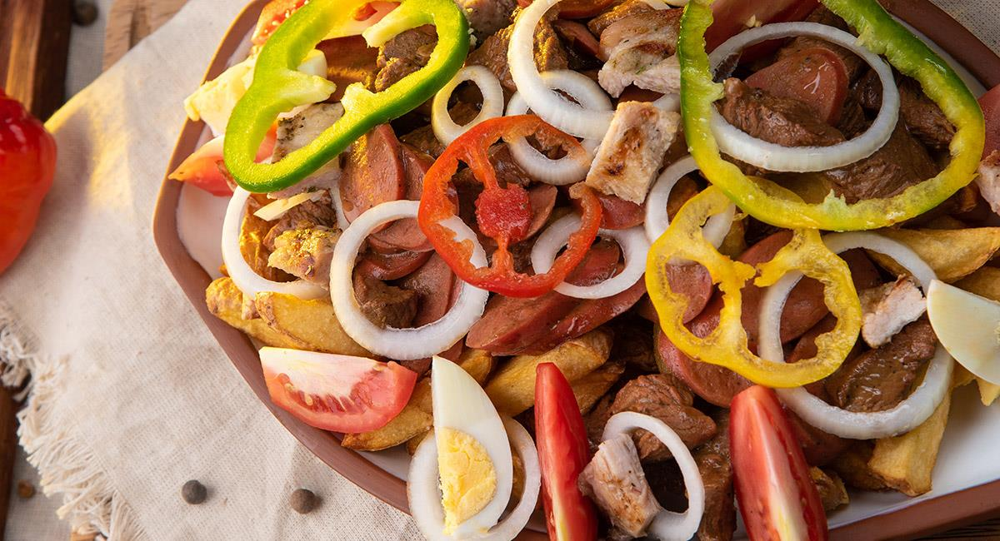

Pique Macho
Home

El pique macho es un plato tipico de Bolivia que consiste en trozos
de carne de res, chorizo y papas a la francesa. Tambien se le añade cebolla,
locoto, tomate huevos duros, queso cortado, mayonesa y ketchup
Ingredients
- 1/4kg onion
- 8 eggs
- 8 viena sausage
- 2 chili peppers
- 1/2kg tomato
- 20 potatoes
- 800gr meat
Steps
- Cut potatoes like french fries
- Chop meat in cubes of 3cm
- In a hot skillet fry the choped meta
- Add the 8 viena sausage choped in circles
- Chop tomatoes and chilli pepper in circles and onion in juliana
- Make the dish puttin firs the potatoes then add the meat and sausage mixed with tomatoes, peppers and onion